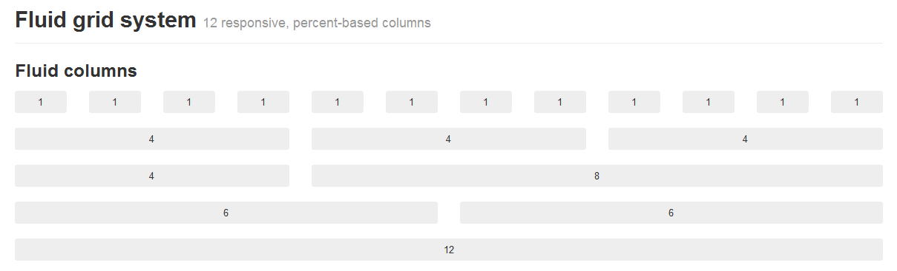
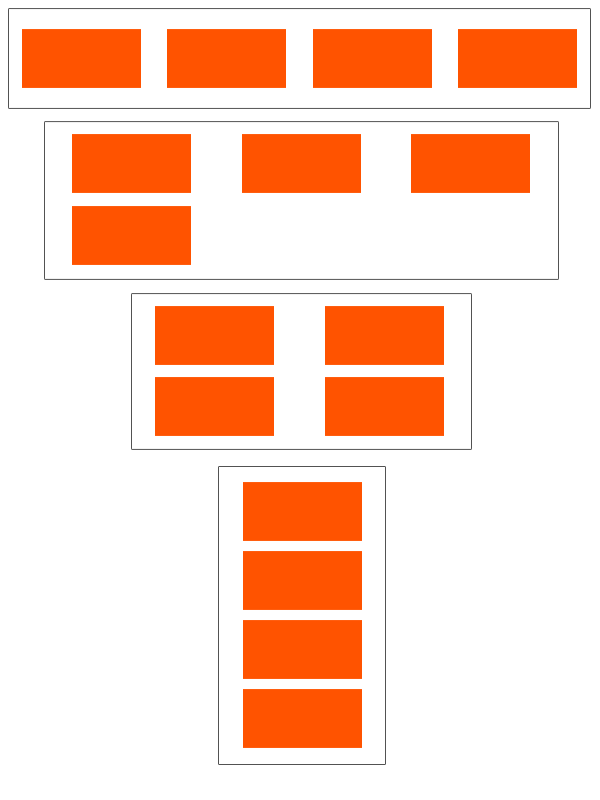
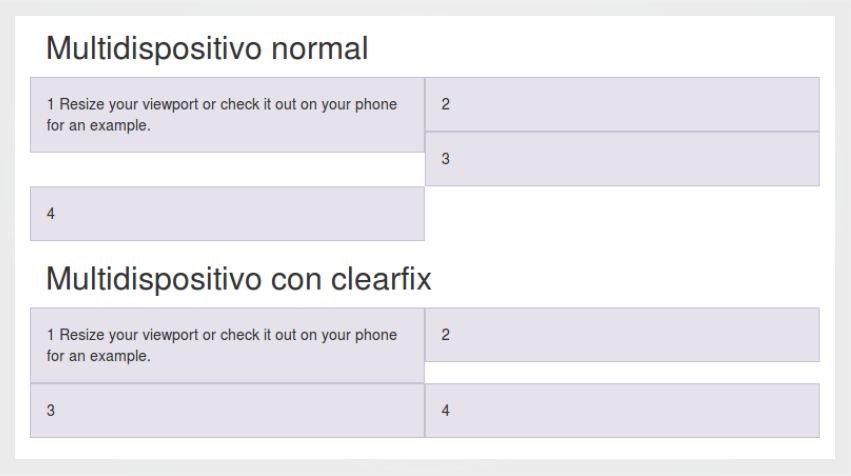
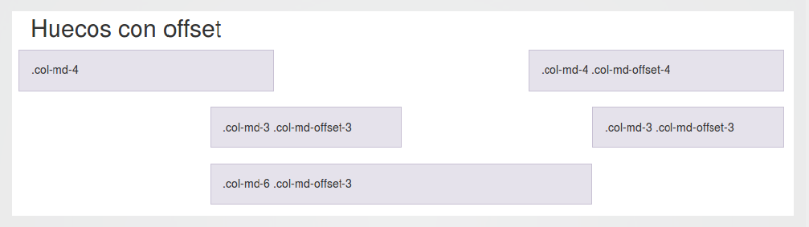
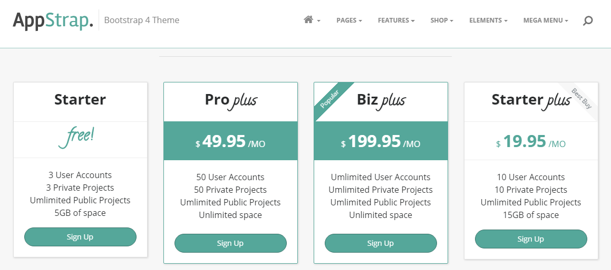
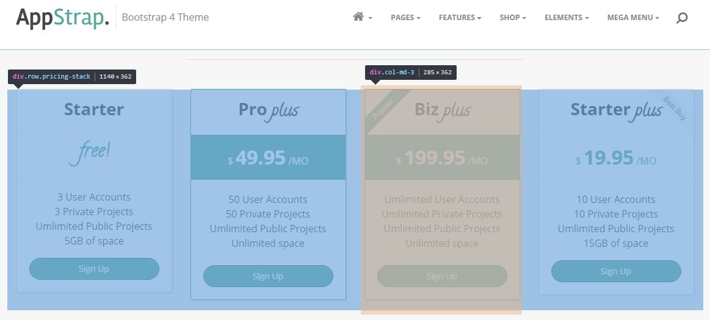
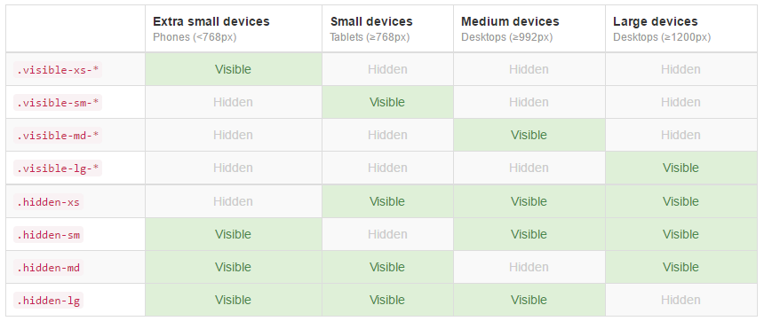

Bootstrap
¿Qué es Bootstrap?
<h2>¿Qué es Bootstrap?</h2> * Es un framework CSS para el desarrollo sencillo y rápido de aplicaciones web. * **Mobile First**, el objetivo son los dispositivos móviles y escala dependiendo del tamaño de la pantalla. * Surge de empleados de Twitter que tenían la necesidad de estandarizar los componentes de front de la compañía (sentido común :) ) BOOTSTRAP" class="plain"/>
<h1>Bootstrap</h1> <p> <span class="subtitle">¿Por qué usar Bootstrap?</span> </p>
<!-- .slide: data-background="#c5e1a5" --> <h2>¿Por qué usar Bootstrap?</h2> * La **curva de aprendizaje** es muy baja * **Velocidad** de desarrollo * Componentes comunes y con **buenas prácticas** * **Compatibilidad** con todos los navegadores (casi todos) * **Responsive** * El sistema de **grids** marca un antes y un después O_o!! * **Preprocesadores** CSS (Saas en la versión 4) * Gran **comunidad** de desarrollo detrás
<h1>Bootstrap</h1> <p> <span class="subtitle">¿Por qué NO usar Bootstrap?</span> </p>
<!-- .slide: data-background="#ef9a9a" --> <h2>¿Por qué NO usar Bootstrap?</h2> * Tiene **valores por defecto** que al inicio son tediosos de cambiar. * Tu diseño siempre tiene que adaptarse al **grid de 12 columnas** * **Añadir componentes que no existen**. En CSS y cuidando el diseño responsive. * Sin cambio en el diseño inicial **TODOS LOS SITES PARECEN IGUALES**
<h1>Bootstrap</h1> <p> <span class="subtitle">Getting started</span> </p>
<h2>Descargando el código fuente</h2> * Versión actual v4.1.2 * https://getbootstrap.com/docs/4.1/getting-started/introduction/ * Descargar los ficheros CSS, JavaScript y fuentes ya compilados y ¿*minificados*? ``` bootstrap/ ├── css/ │ ├── bootstrap.css │ ├── bootstrap.css.map │ ├── bootstrap.min.css │ ├── bootstrap.min.css.map │ ├── bootstrap-grid.css │ ├── bootstrap-grid.css.map │ ├── bootstrap-grid.min.css │ └── bootstrap-grid.min.css.map ├── js/ │ ├── bootstrap.js │ └── bootstrap.min.js │ ├── bootstrap.bundle.js │ └── bootstrap.bundle.min.js ```
<h2>Instalando la dependencia en tu proyecto</h2> ``` $ npm install bootstrap ```
<h2>Bootstrap CDN links</h2> Si no quieres descargar directamente en tu proyecto el framework se puede incluir desde Bootstrap CDN (Content Delivery Network) <p>CSS Completo</p> ```html https://stackpath.bootstrapcdn.com/bootstrap/4.1.2/css/bootstrap.min.css ``` <p>JavaScript Completo</p> ```html https://stackpath.bootstrapcdn.com/bootstrap/4.1.2/js/bootstrap.min.js ```
<h2>DEMO</h2> <h5>https://codepen.io/herre/pen/KBMMyG</h5>
<h1>Bootstrap</h1> <p> <span class="subtitle">Grid System</span> </p>
<h2>Grid System</h2> * https://getbootstrap.com/docs/4.1/layout/grid/ * Incluye un **sistema de rejilla responsive y mobile first de 12 columnas** * Nos permite mantener **orden**, **proporción** y **composición**. Establecer un **Layout** 
<h3>Anchura total de la página con Bootstrap: ¿100% o limitada?</h3> * Hacer una página RESPONSIVE no quiere decir que ocupe el 100% de la anchura de toda la pantalla * De hecho, nos podemos encontrar con las siguientes posibilidades: * Utilizar una anchura limitada (nada rebasa esa anchura) ```html <div class=”container”> aquí nuestros contenidos acotados en anchura </div> ``` * Utilizar el 100% de la anchura del monitor para todo el contenido ```html <div class=”container-fluid”> aquí nuestros contenidos al 100% de página </div> ``` * Utilizar el 100% de la anchura pero el fondo ocupando el 100% y contenido acotado ```html <div class=”container-fluid”> <div class=”container”> aquí nuestros contenidos </div> </div> ```
<h2>Row</h2> * Se debe colocar .row dentro de un .container(ancho fijo) o .container-fluid (ancho completo) * Se utiliza .row para crear grupos horizontales * El contenido se debe colocar entre .row y deben de ser hijos inmediatos ```html <div class="row"> <!-- Columnas del grid que formarán el layout --> </div> ```
<h2>Column</h2> * Son creadas especificando el tamaño de la columna. La suma de todas tiene que ser 12. * Si hay más de 12 columnas en una .row, esta son desplazadas abajo ```html <div class="row"> <div class="col-md-4">.col-md-4</div> <div class="col-md-4">.col-md-4</div> <div class="col-md-4">.col-md-4</div> </div> ```
<h2>Multidispositivo (ejemplo)</h2> * Resolución **lg (≥1200px)**: queremos 4 bloques en fila. como son 12 columnas, 4 columnas de tamaño 3 * Resolución **md (≥992px)**: queremos 3 bloques por fila: como son 12 columnas, 3 columnas de tamaño 4 * Resolución **sm (≥768px)**: queremos 2 bloques por fila: como hay 12 columnas, 2 columnas de tamaño 6 * Resolución **xs (<768px)**: queremos 1 bloque por fila: 1 columna de tamaño 12. ```html <div class=”row”> <div class=”col-lg-3 col-md-4 col-sm-6 col-xs-12″> nuestro bloque </div> <div class=”col-lg-3 col-md-4 col-sm-6 col-xs-12″> nuestro bloque </div> <div class=”col-lg-3 col-md-4 col-sm-6 col-xs-12″> nuestro bloque </div> <div class=”col-lg-3 col-md-4 col-sm-6 col-xs-12″> nuestro bloque </div> </div> ```
```html <div class=”row”> <div class=”col-lg-3 col-md-4 col-sm-6 col-xs-12″> nuestro bloque </div> <div class=”col-lg-3 col-md-4 col-sm-6 col-xs-12″> nuestro bloque </div> <div class=”col-lg-3 col-md-4 col-sm-6 col-xs-12″> nuestro bloque </div> <div class=”col-lg-3 col-md-4 col-sm-6 col-xs-12″> nuestro bloque </div> </div> ``` 
<h2>Clearfix</h2> * Problema cuando una capa tiene un alto mayor que la de los demás  ```html <div class="row"> <div class="...">1Resize your viewport</div> <div class="...">2</div> <div class="clearfix visible-sm-block"></div> <div class="...">3</div> <div class="clearfix visible-md-block"></div> <div class="...">4</div> </div> ```
<h2>Huecos con Offset</h2>  ```html <div class="row"> <div class="col-md-4">.col-md-4</div> <div class="col-md-4 col-md-offset-4">.col-md-4 .col-md-offset-4</div> </div> ```


<h2>DEMO</h2> <h5>https://codepen.io/herre/pen/bjeBLB</h5>
<h1>Bootstrap</h1> <p> <span class="subtitle">Responsive utilities</span> </p>
<h2>Responsive utilities</h2> * Para un desarrollo más rápido "mobile-friendly", Bootstrap nos proporciona clases para mostrar u ocultar componentes en función del dispositivo 
<h2>DEMO</h2> <h5>https://v4-alpha.getbootstrap.com/layout/responsive-utilities/</h5>
<h1>Bootstrap</h1> <p> <span class="subtitle">Components</span> </p>
<h2>Components</h2> * Alerts * Badge * Breadcrumb * Buttons * Button group * Card * Carousel * Collapse * Dropdowns * Forms * Input group * Jumbotron
<h2>Components</h2> * List group * Modal * Navs * Navbar * Pagination * Popovers * Progress * Scrollspy * Tooltips * Utilit * ........
<h2>Components</h2> * Son tantos tantos y tantos los componentes que incluye la versión actual que siempre será mejor ir al origen * Necesitaríamos decenas de slides para mostrar cada uno!!
<h2>DEMO</h2> <h5>https://getbootstrap.com/</h5>